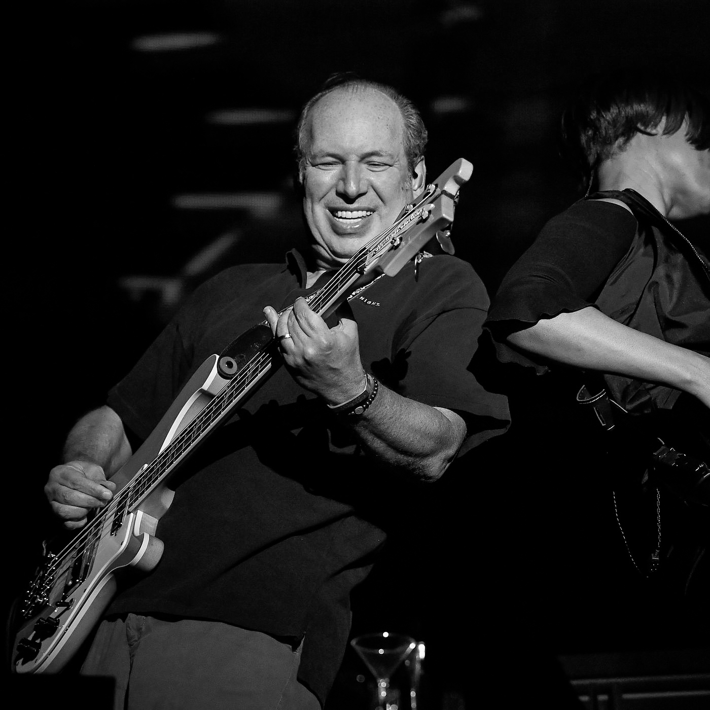
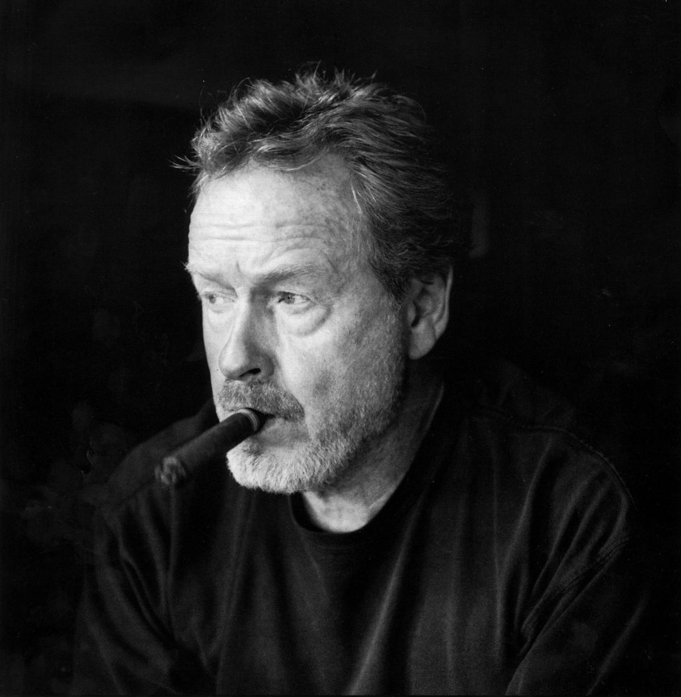
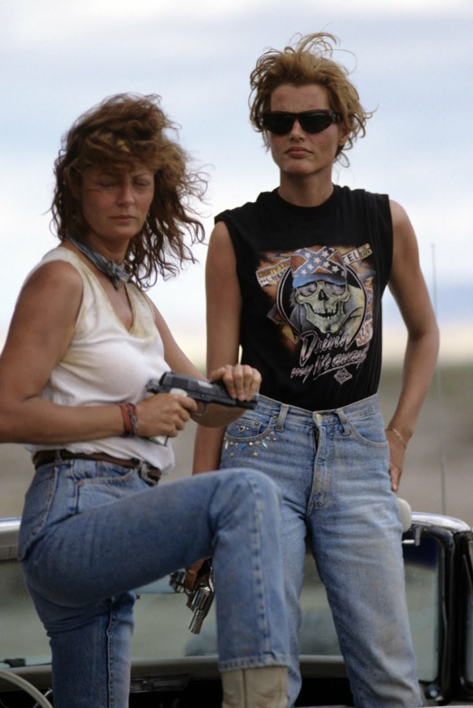

Qui est-il ?
Hans Zimmer est un compositeur de musique Allemand, Naturalisé américain. Il commence sa carrière dans les années 80, il est maintenant connu pour avoir composée la musique de nombreux films à succès et il cumule deux Oscars de la meilleure musique de film en 2022. Le quotidien britannique The Daily Telegraph le classe comme l’un des plus grands compositeurs de films au monde.
Hans Zimmer à Coachella, 2017. Photo par Harrison Fraser.
Il est notament célèbre pour avoir composé la musique de Rain man, et celle du Roi lion. Il fait beaucoup de concerts.

Prise par Peter George en 2005. Los Angeles, Californie.
Ridley Scott
Ridley Scott, né le 30 novembre 1937 à South Shields dans le Tyne and Wear, est un réalisateur et producteur britannico-américain. Il est révélé à la fin des années 1970 et durant les années 1980 par trois blockbusters : Alien, le huitième passager, Blade Runner et Legend.
Scott Council, DGA interview 2010
3 films populaires
Alien - Le 8ème Passager
Blade Runner (1982)
Thelma et Louise (1991)
Thelma et Louise
Thelma, une jeune femme innocente dont la vie n’est que l’addition d’une routine ennuyante et d’un mariage désastreux, reçois le téléphone de sa meilleure amie Louise, qui l’invite faire un road trip de rêve entre fille. Le plan génial tourne vite au drame quand, pour défendre son amie, Louise tue un homme.
Elles prennent la fuite et leur voyage se transforme en cavale pour tenter de rejoindre la frontière du Mexique.
Image du film Thelma et Louise
Thunderbird
Thunderbird est le morceau mythique de la bande originale de Thelma & Louise. Morceau écrit par Hans Zimmer et interprété par Pete Haycock. C’est une mélodie avec un côté western, lente et planante, qui, grâce à cette guitare aux sons réverbérés nous rappelle par moment Pink Floyd. Elle téléporte immédiatement dans les déserts secs du sud des États-Unis. Le lieu du road trip de Thelma et Louise.